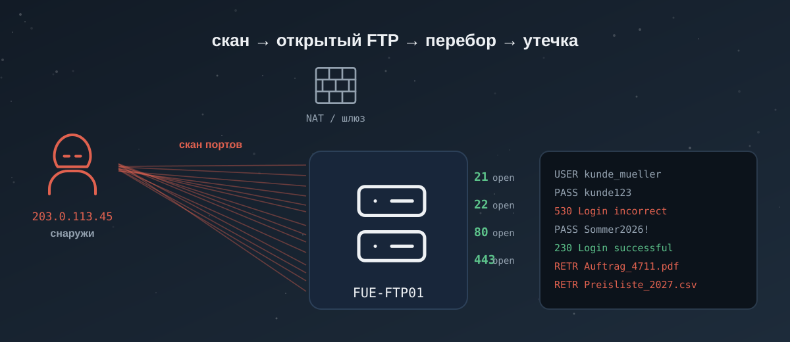

Учебник: Networking
Модуль: Cyber Security 101 · Комнаты: Networking Concepts, Networking Essentials, Networking Core Protocols, Networking Secure Protocols, Wireshark: The Basics, Tcpdump: The Basics, Nmap: The Basics.
Что будешь уметь после учебника:
- разложить любую сетевую улику по уровням (модель OSI) и сказать, кто её записал и где её искать;
- по одному адресу понять, внутренний это узел или из интернета, и в какую сторону шло соединение;
- прочитать пакет в Wireshark и в tcpdump: кто кого спросил, что ответил, где пароль ушёл открытым текстом;
- опознать по трафику скан портов, перебор пароля и утечку файла — и отличить их от обычного сетевого фона;
- коротко доложить сетевой алерт по-немецки и собрать строку для тикета.
Маршрут:
- 🔥🤔 Глава 1. OSI и TCP/IP — комната Networking Concepts: по желанию. Теория вся в главе, комнату — ради telnet-практики и галочки пути. ~60 мин.
- 🔥🤔 Глава 2. Внутри LAN — Networking Essentials: по желанию. ~60 мин.
- 🔥🧪 Глава 3. Открытые протоколы — Networking Core Protocols: пройди. Там живой telnet к веб-, почтовому и FTP-серверу — лучшая практика на протоколы. ~45 мин.
- 🔥🤔 Глава 4. Защищённые протоколы — Networking Secure Protocols: по желанию. ~60 мин.
- 🔥🧪 Глава 5. Wireshark — Wireshark: The Basics: пройди. Живой интерфейс с готовым pcap, текстом не заменить (премиум). ~60 мин.
- 👀🤔 Глава 6. Tcpdump — Tcpdump: The Basics: по желанию. tcpdump есть на маке, всё повторишь на моих pcap (премиум). ~60 мин.
- 🔥🤔 Глава 7. Nmap — Nmap: The Basics: по желанию. Для L1 важнее узнать скан в логах, чем сканировать самому (премиум). ~60 мин.
Итого: 6 глав 🔥 обязательных, 1 👀 беглая. Практика — в конце, на настоящих pcap, их можно открыть на маке.

Вспомни прошлое
Пять вопросов из прошлых учебников — повторение, чтобы не выветрилось. Не помнишь — под ответом объяснение.
10.20.0.25. Что можно сказать сразу, не проверяя его в интернете?Failed password for root from 203.0.113.5. Что это?Accepted, что напишешь?svchost.exe в алерте запущен из C:\Users\Public\. Почему это вопрос?Пролог: одна ночь, три алерта
01:10, ночная смена. Учебная фирма Kranich Druck GmbH (типография в Фюрте, выдумана). 120 сотрудников. Наружу, в интернет, смотрит один сервер — FUE-FTP01: заказчики заливают на него макеты. Днём за фирмой следит своя IT-команда, ночью — ты, L1 в SOC, который обслуживает Kranich Druck.
Фирма, машины и учётки выдуманы. Внутренние адреса — из частных диапазонов, внешние — из диапазонов, специально отведённых для примеров (203.0.113.0/24 и подобные). Настоящие захваты трафика будут в практике и в главах 5–7, и там всегда сказано, что они настоящие.
За эту ночь SIEM поднимает три алерта — и это не три разные беды, а один незваный гость с адреса 203.0.113.45, которого мы будем вести через весь учебник:
- 01:14 — «много отказов входа на FTP-сервере». Кто-то подбирает пароль к FUE-FTP01 (главы 3 и 5).
- 01:16 — «скан портов снаружи». Тот же адрес до этого прошёлся по портам сервера — искал, что открыто (глава 7).
- 01:31 — «файл ушёл на внешний адрес». Со стороны сервера наружу утекли два файла заказчика (главы 3 и 4 — почему их вообще было видно).
Три слова, без которых пролог не понять. SIEM (Security Information and Event Management) — система, которая собирает журналы со всех машин фирмы в одно место и по правилам поднимает алерты, сигналы «посмотри сюда». Сервер — обычный компьютер без монитора, круглые сутки работающий на фирму: тут на нём крутится приём файлов от заказчиков. L1 — первая линия SOC, то есть ты: принимаешь алерт, проверяешь и решаешь — закрыть как ложное или передать дальше (L2).
Порядок в сюжете обратный времени: сначала был скан (глава 7), потом перебор (глава 3), потом утечка. Но чтобы всё это прочитать в трафике, сперва надо понять, из чего трафик состоит. С этого и начнём.
Глава 1. Модель OSI и TCP/IP (Networking Concepts)
Аналогия: отправка посылки
Ты отправляешь посылку. Сам ты только кладёшь вещь в коробку и пишешь адрес. Дальше коробку упаковывают в мешок, мешок грузят в фургон, фургон едет по трассе. На каждом этаже — свои люди, своя наклейка, свой транспорт. Получатель разбирает всё в обратном порядке и достаёт ту же вещь.
Сеть устроена так же. Твоё сообщение (например, «покажи страницу») по дороге обрастает наклейками: адрес получателя, адрес твоей сетевой карты, номера для сборки. Модель OSI — это список таких этажей, одинаковый для всех. Зная этаж, ты сразу понимаешь, кто наклеил наклейку и где искать улику.
Ты на смене
Прилетел алерт: «подозрительное соединение с сервера бухгалтерии наружу». В нём свалены в кучу: IP-адрес, порт, имя сайта, кусок HTTP-запроса. Чтобы не утонуть, ты мысленно раскладываешь это по этажам: адрес — на сетевой этаж, порт — на транспортный, имя сайта и запрос — на прикладной. Каждый этаж отвечает на свой вопрос: куда шло, в какую дверь, что именно просили. Так из каши получается понятная картина, и ты знаешь, что из этого важно.
Сначала слова, без которых дальше не понять
Сеть. Два и более компьютера, соединённых так, что могут обмениваться данными. Дома твой ноутбук, телефон и роутер — уже сеть.
Пакет (packet). Маленький кусок данных с адресом получателя — как один конверт. Большое сообщение сеть режет на много пакетов и шлёт по одному. Единого «провода от тебя до сайта» нет: есть поток пакетов.
Протокол (protocol). Договорённость, как именно разговаривать. Люди при встрече жмут руку — это протокол. У компьютеров протокол — это правила: какие байты в каком порядке, что значит «привет», что значит «понял». HTTP, TCP, IP — всё это протоколы для разных этажей.
IP-адрес (IP address). Номер компьютера в сети, как номер телефона: 203.0.113.45. По нему пакет находит нужную машину.
MAC-адрес (MAC address). Несменяемый заводской номер самой сетевой карты: 00:25:b3:1a:77:0c. IP можно поменять, MAC вшит в железо. Нужен, чтобы передать кадр соседу внутри одной локальной сети.
Клиент и сервер. Клиент — тот, кто просит (твой браузер). Сервер — тот, кто отвечает (машина с сайтом). Один и тот же компьютер бывает и тем, и другим в разных соединениях.
Сеть — это матрёшка
На смене: когда алерт показывает и адрес, и порт, и имя сайта, важно не считать это тремя отдельными фактами. Это одно соединение, просто описанное на разных этажах.
Каждый этаж берёт данные с верхнего, добавляет свою наклейку (заголовок, header) и передаёт вниз. Заголовок — это служебная приписка в начале: кто, кому, какого размера. У получателя всё идёт наоборот: каждый этаж снимает свою наклейку и отдаёт остальное выше.
Поэтому в одном пакете одновременно лежат наклейки всех этажей, вложенные друг в друга, как матрёшка. Твоя задача на смене — знать, на каком этаже какая наклейка, и не путать их.
Семь уровней OSI — где лежит каждая улика
OSI (Open Systems Interconnection) — это модель-линейка из семи уровней. Её придумали, чтобы у всех было одно общее название для каждого этажа. Запоминать все семь наизусть для L1 не обязательно — важно понимать четыре рабочих и знать, что на каком лежит.
| № | Уровень | Простыми словами | Пример наклейки | Что тут ищет L1 |
|---|---|---|---|---|
| 7 | Прикладной (Application) | то, что видит программа | HTTP-запрос, имя сайта, письмо | что именно просили: GET /login, адрес почты |
| 6 | Представления (Presentation) | формат и шифрование данных | TLS, кодировка, сжатие | зашифровано или нет |
| 5 | Сеансовый (Session) | начало и конец разговора | — | редко важен сам по себе |
| 4 | Транспортный (Transport) | в какую «дверь» и надёжно ли | TCP/UDP, порт | порт → какая служба (80 — веб, 25 — почта) |
| 3 | Сетевой (Network) | какой машине, через какие сети | IP-адрес | откуда и куда шло соединение |
| 2 | Канальный (Data Link) | соседу внутри одной сети | MAC-адрес, кадр | кто физически отправил внутри LAN |
| 1 | Физический (Physical) | провод, радиоволна, свет | биты в кабеле/Wi-Fi | почти никогда |
Читается снизу вверх как «от железа к человеку». Для смены держи в голове три самых частых:
- Уровень 3 (IP) — куда и откуда. Адрес
203.0.113.45— отсюда пришли. - Уровень 4 (порт) — в какую дверь. Порт 21 — стучались в FTP.
- Уровень 7 (приложение) — что именно сделали.
USER kunde_mueller— пробовали войти под этой учёткой.
Запомни ответы на вопросы «какой уровень отвечает за…»:
- связь между запущенными программами (end-to-end) — транспортный, 4;
- маршрутизацию пакета в нужную сеть — сетевой, 3;
- кодирование данных приложения — представления, 6;
- передачу между хостами в одном сегменте сети — канальный, 2.
25. На каком уровне OSI живёт номер порта и что он тебе говорит?TCP/IP: та же матрёшка, но четыре этажа
OSI — удобная линейка для объяснений, но реальный интернет работает по модели попроще — TCP/IP (её же зовут моделью DoD). В ней четыре уровня: несколько «тонких» этажей OSI слиты в один.
| TCP/IP (4) | Что вобрал из OSI | Пример |
|---|---|---|
| Application (приложение) | 7 + 6 + 5 | HTTP, DNS, FTP, TLS |
| Transport (транспорт) | 4 | TCP, UDP |
| Internet (интернет) | 3 | IP |
| Link / Network Access (доступ к сети) | 2 + 1 | Ethernet, Wi-Fi, MAC |
Два факта, которые спрашивают прямо:
- HTTP в модели TCP/IP лежит на уровне Application.
- Уровень Application в TCP/IP покрывает три верхних уровня OSI (7, 6 и 5).
Почему тебе это важно: инструменты и документация прыгают между двумя моделями. Splunk и Wireshark чаще говорят на языке TCP/IP, а учебники и сертификаты (в том числе экзамен SEC1) любят спрашивать номера уровней OSI. Держи обе линейки рядом.
Инкапсуляция: как кусок данных меняет имя
На смене: в Wireshark один и тот же кусок называется по-разному на разных строках. Если не знать, почему, кажется, что это разные вещи. На самом деле это одна матрёшка на разных этажах.
Инкапсуляция (encapsulation) — «вкладывание»: каждый уровень оборачивает данные верхнего в свой заголовок. У данных на каждом этаже своё имя:
| Этаж | Как называется единица | Что добавилось |
|---|---|---|
| Приложение | данные (data) | само сообщение |
| Транспорт (TCP) | сегмент (segment) | порты, номера для сборки |
| Транспорт (UDP) | датаграмма (datagram) | порты |
| Интернет (IP) | пакет (packet) | IP-адреса откуда/куда |
| Доступ к сети | кадр (frame) | MAC-адреса, в Wi-Fi тоже кадр |
Запомни ответы:
- данные, завёрнутые в TCP, — сегмент;
- данные, завёрнутые в UDP, — датаграмма;
- IP-пакет, завёрнутый для Wi-Fi, — кадр (frame).
Видишь: USER kunde_mueller (что просят) лежит в самой глубине, обёрнутый сначала в TCP (порт 21), потом в IP (кто кому), потом в кадр (соседу). Ровно это ты и раскладываешь по уровням на смене.
TCP, UDP, порты и рукопожатие
На смене: почти каждый алерт называет порт и протокол транспорта. От того, TCP это или UDP, зависит, увидишь ли ты в трафике «начало разговора» — а по нему и ловят скан и перебор.
Транспортный уровень (4) умеет двумя способами.
TCP (Transmission Control Protocol) — с гарантией доставки. Прежде чем слать данные, стороны устанавливают соединение и подтверждают каждый кусок. Как телефонный звонок: сначала «алло — алло — слышу», потом разговор.
UDP (User Datagram Protocol) — без гарантии. Шлёт и не ждёт подтверждения. Как крикнуть через двор: быстро, но не факт, что услышали. На нём работают DNS, DHCP — там скорость важнее надёжности.
Соединение TCP открывается трёхсторонним рукопожатием (three-way handshake) — тремя пакетами с особыми пометками, флагами:
| Шаг | Кто | Флаг | Смысл |
|---|---|---|---|
| 1 | клиент | SYN | «давай соединимся» |
| 2 | сервер | SYN, ACK | «давай; подтверждаю твой» |
| 3 | клиент | ACK | «подтверждаю, работаем» |
Флаг — это пометка в заголовке TCP, одно короткое состояние. Тебе важны три:
- SYN — запрос на открытие соединения;
- ACK — подтверждение;
- RST (reset) — «сброс», резкий отказ: «тут закрыто, уходи».
Почему это ядро всей сетевой защиты: по этим флагам читаются атаки. Скан портов (глава 7) шлёт пачку SYN на разные порты; закрытый порт отвечает RST, открытый — SYN, ACK. Так в захвате видно, что искали и что нашли, — ответ на вопрос, кто требует трёхстороннего рукопожатия: это TCP.
Порты — это 65 536 «дверей» на каждом узле (число 16-битное, от 0 до 65535). Низкие номера закреплены за известными службами (80 — веб, 21 — FTP, 22 — SSH), высокие случайные — за клиентом на время соединения. Так ответ на «сколько примерно портов»: около 65 тысяч.
telnet: поговорить с портом руками
На смене: иногда надо быстро проверить, что за служба висит на порту и отвечает ли она. Для текстовых протоколов это делают голой командой telnet.
telnet — старая программа: открывает соединение на любой порт и даёт печатать текст прямо в него. Шифрования нет, поэтому для работы она опасна (об этом глава 4), но как «пинг для прикладного уровня» — удобна.
telnet 10.20.0.25 80
Ты набираешь GET / HTTP/1.0 и дважды Enter — и видишь ответ сервера прямо текстом: строку вида Server: nginx/1.24.0. Это и есть ответ на вопрос «какой веб-сервер и какой версии тут стоит» — версия пригодится, чтобы потом проверить, нет ли у неё известных дыр.
Если не получилось:
- command not found — на маке telnet не ставят по умолчанию. Поставь brew install telnet или проверь порт через nc 10.20.0.25 80 (nc, netcat, есть почти везде).
- Соединение висит и ничего не печатает — порт закрыт или фильтруется. Это уже ответ: служба недоступна.
Ошибка новичка: считать telnet безопасным инструментом «на каждый день». Всё, что ты в него печатаешь, включая пароль, идёт по сети открытым текстом — любой по дороге прочитает. Для диагностики на минуту — да, для входов — никогда.
Копнуть глубже
IP-адреса, подсети и «не настоящий» адрес
IP-адрес версии 4 — это четыре числа через точку, и каждое число (октет) умещается в один байт, то есть от 0 до 255. Поэтому адрес, где хоть один октет больше 255 (скажем, 10.0.300.1), — невалидный: такого байта не бывает. Это первая проверка на смене: число > 255 — значит, перед тобой не адрес, а опечатка или мусор.
Адреса делятся на публичные (маршрутизируются в интернете) и частные (только внутри сети, в интернет не выходят). Три частных диапазона стоит запомнить — именно они встречаются во внутренних логах:
10.0.0.0 – 10.255.255.255172.16.0.0 – 172.31.255.255192.168.0.0 – 192.168.255.255
Правило чтения: адрес из этих диапазонов — внутренний узел фирмы; любой другой — из интернета, его можно пробивать по базам. Осторожно с 172: частный только кусок 172.16–172.31, а, например, 172.67.x — уже публичный. Так что 172 сам по себе ещё ничего не говорит, смотри второй октет.
Подсеть (subnet) — способ порезать большую сеть на куски. Запись /24 (маска подсети) говорит, сколько бит адреса — «номер сети», а сколько — «номер хоста». Для L1 хватает чтения: если видишь 10.20.0.0/24, значит «все адреса 10.20.0.1–10.20.0.254 — одна локальная сеть». Считать маски руками на смене почти не приходится — это работа сетевиков.
Термины главы
| EN | RU | DE |
|---|---|---|
| packet | пакет | das Paket |
| header | заголовок (наклейка) | der Header / der Kopf |
| encapsulation | инкапсуляция | die Kapselung |
| frame | кадр | der Rahmen / der Frame |
| segment | сегмент | das Segment |
| port | порт | der Port |
| layer | уровень | die Schicht / der Layer |
Как сказать на смене
«Die verdächtige Verbindung läuft auf Port 21, also FTP — das ist Transportschicht und Anwendungsschicht.» — Подозрительное соединение идёт на порт 21, то есть FTP — это транспортный и прикладной уровни.
Выжимка
- OSI — линейка из 7 уровней, TCP/IP — та же идея в 4; держи обе рядом, инструменты говорят то на одном, то на другом языке.
- Три рабочих вопроса: уровень 3 (IP) — откуда/куда, уровень 4 (порт) — в какую дверь/какая служба, уровень 7 — что именно сделали.
- Инкапсуляция: один кусок данных зовётся сегментом (TCP) / датаграммой (UDP) → пакетом (IP) → кадром (канальный).
- Частные адреса (
10.x,172.16–31.x,192.168.x) в интернете не встречаются;/24— это «одна локальная сеть». telnetоткрывает порт и говорит текстом — удобно для проверки, опасно для паролей.
Связи
- Следующая глава — как эти адреса превращаются в MAC и откуда узел вообще берёт свой IP (ARP, DHCP).
- Networking Concepts на THM — та же теория плюс telnet-практика к веб-серверу.
Глава 2. Внутри локальной сети: ARP, DHCP, ICMP, маршрутизация, NAT (Networking Essentials)
Аналогия: подъезд многоквартирного дома
Локальная сеть — это подъезд. Внутри все знают друг друга в лицо (по MAC-адресу) и могут передать записку соседу напрямую. Но чтобы написать кому-то в другом городе, записку несут консьержу (шлюзу, gateway) — он один знает дорогу наружу. А чтобы весь дом общался с городом под одним адресом, на двери висит одна табличка (NAT), и почтальон снаружи видит только её, а не номера квартир.
Ты на смене
Алерт: «аномалия ARP на этаже бухгалтерии». Звучит непонятно, пока не знаешь, что ARP — это способ узнать MAC соседа по его IP. А значит, подделка ARP — это «я теперь выдаю себя за шлюз, пусть весь трафик идёт через меня». Это атака «человек посередине». Твоя работа — в захвате трафика увидеть один MAC, который заявляет сразу два адреса, и понять, кого он подслушивает.
Сначала слова, без которых дальше не понять
Локальная сеть / LAN (Local Area Network). Компьютеры в одном месте, соединённые напрямую: офис, квартира. Внутри они общаются по MAC-адресам.
Шлюз (gateway). Устройство (обычно роутер), через которое сеть выходит наружу, в другие сети и интернет. Его адрес узел запоминает как «дорогу к остальному миру». Часто это .1 в своей сети, например 192.168.1.1.
Роутер (router, маршрутизатор). Коробка, которая соединяет разные сети и решает, в какую сторону отправить пакет. Домашний роутер — одновременно и шлюз.
Широковещание (broadcast). Сообщение «всем в этой сети сразу», без конкретного адресата. Адрес-получатель для него особый: 255.255.255.255 или ff:ff:ff:ff:ff:ff. Так узел кричит на весь подъезд, когда ещё не знает, к кому обращаться.
ARP: как IP превращается в MAC
На смене: ARP — тихий служебный протокол, который почти всегда норма. Но именно его подделывают, чтобы встать посередине и читать чужой трафик. Поэтому его надо уметь читать.
ARP (Address Resolution Protocol) решает одну задачу: «у меня есть IP соседа, мне нужен его MAC». Узел кричит на весь подъезд (широковещание): кто такой 192.168.66.1? сообщите свой MAC. Нужный хозяин отвечает лично: это я, мой MAC такой-то.
- Вопрос (ARP Request) идёт на MAC-получатель
ff:ff:ff:ff:ff:ff— всем сразу. - Ответ (ARP Reply) приходит лично спросившему: пара «вот IP — вот его MAC».
Так ответы на частые вопросы: получатель в ARP-запросе — широковещательный ff:ff:ff:ff:ff:ff; MAC адреса 192.168.66.1 — тот, что придёт в ответе от самого 192.168.66.1.
Тёмная сторона ARP: человек посередине
Беда в том, что ARP верит на слово. Никто не проверяет, правда ли ответивший — хозяин адреса. Атакующий рассылает ложные ответы: «шлюз 172.16.0.1 — это мой MAC». Все начинают слать трафик для интернета ему, он читает и передаёт дальше. Жертва ничего не замечает. Это ARP-спуфинг, он же человек посередине (MITM, man-in-the-middle; в свежих материалах — AiTM, adversary-in-the-middle).
Как это выглядит в захвате: один MAC заявляет сразу несколько IP. На настоящем примере из учебного набора:
MAC 00:25:b3:bf:91:ee → заявляет 172.16.0.1 И 172.16.0.105
Один и тот же MAC говорит, что он и шлюз (172.16.0.1), и обычный хост (172.16.0.105). В честной сети так не бывает: у каждого адреса свой MAC. Это и есть подпись атаки.
Как записать в тикет:
ARP-спуфинг в сегменте бухгалтерии. MAC 00:25:b3:bf:91:ee заявляет два адреса:
172.16.0.1 (шлюз) и 172.16.0.105. Похоже на «человека посередине» —
трафик жертвы может читаться. Эскалация на L2, изолировать порт коммутатора.
DHCP: откуда узел берёт свой адрес
На смене: когда видишь незнакомый адрес в своей сети, полезно знать, сам он его взял честно (через DHCP) или кто-то воткнул чужое устройство. DHCP-журнал отвечает, какой машине какой адрес выдали и когда.
DHCP (Dynamic Host Configuration Protocol) выдаёт новому устройству настройки сети: IP-адрес, маску, шлюз, DNS. Иначе каждый адрес пришлось бы вбивать руками. Обмен идёт в четыре шага, их зовут DORA:
| Шаг | Кто | Что говорит | Адреса |
|---|---|---|---|
| Discover | клиент | «есть тут DHCP? дайте настройки» | от 0.0.0.0 всем (255.255.255.255) |
| Offer | сервер | «предлагаю адрес X» | сервер → клиенту |
| Request | клиент | «беру X» | снова всем |
| Ack | сервер | «закрепил X за тобой» | сервер → клиенту |
Так ответы: шагов в DHCP — четыре; при Discover клиент шлёт на 255.255.255.255 (ещё нет своего адреса), а свой адрес-источник у него 0.0.0.0 — тоже потому, что адреса пока нет.
ICMP: жив ли узел и каким путём идёт пакет
На смене: ping и traceroute — первое, чем проверяют «узел вообще отвечает?» и «где обрывается путь?». А ещё всплеск ICMP бывает прикрытием: им сканируют сеть или прячут данные. Надо уметь прочитать и то, и другое.
ICMP (Internet Control Message Protocol) — служебные сообщения о состоянии сети: «дошло / не дошло / время вышло».
ping шлёт «эхо-запрос» (тип 8) и ждёт «эхо-ответ» (тип 0). Пришёл ответ — узел жив и путь до него есть.
192.168.100.138 → 192.168.100.1 ICMP Echo (ping) request (тип 8)
192.168.100.1 → 192.168.100.138 ICMP Echo (ping) reply (тип 0)
traceroute (на Windows — tracert) показывает каждый узел по пути. Хитрость — в поле TTL (Time To Live, «время жизни»): это счётчик прыжков в заголовке IP. Каждый роутер уменьшает его на 1; дойдёт до нуля — роутер выбрасывает пакет и шлёт назад ICMP «время истекло» (тип 11). traceroute отправляет пакеты с TTL=1, потом 2, потом 3 — и по «жалобам» собирает список узлов.
На настоящем захвате видно, как TTL растёт по три пробы на шаг, и каждый шаг «жалуется» новый роутер:
TTL=1 → отвечает 192.168.100.1 (первый роутер, твой шлюз)
TTL=2 → отвечает 12.180.241.1 (следующий)
TTL=3 → отвечает 12.86.61.157 ...
Так ответ: до нуля traceroute доводит поле TTL — на нём держится весь трюк.
Если не получилось: ping молчит — это не всегда «узел мёртв». Многие серверы и файрволы специально не отвечают на ICMP. Проверяй доступность ещё и по нужному порту (глава 7, nmap), а не только пингом.
Ошибка новичка: считать всплеск ICMP всегда безобидным. Десятки тысяч ICMP-пакетов между двумя узлами — это может быть и сбой, и прикрытие скана, и вынос данных внутри ICMP. Смотри объём и направление.
NAT: почему вся фирма — это один адрес
На смене: это объясняет, почему в алерте «соединение с нашего адреса 203.0.113.45» за одним публичным адресом могут прятаться сотни машин — и почему внешнему злодею вся Kranich Druck видна как один IP.
NAT (Network Address Translation) — подмена адресов на границе сети. Внутри все узлы живут на частных адресах (192.168.x), а наружу роутер выпускает их все под одним публичным. Чтобы не перепутать, кому вернулся ответ, он держит таблицу и каждому соединению даёт свой номер порта.
Поэтому: если за NAT телефон с адресом 192.168.0.5 выходит в интернет через роутер с публичным X, снаружи он появляется как X. Ports — числа 16-битные, то есть в таблице NAT на один публичный адрес помещается до 65 536 одновременных «дверей».
Для тебя вывод двойной: внешний адрес в алерте — это часто целая сеть за NAT, а не одна машина; и наоборот, весь внутренний трафик Kranich Druck наружу выходит под одним адресом, по которому злодей и «щупает» фирму — как раз с этого начнётся глава 7.
00:25:b3:bf:91:ee отвечает, что он и 172.16.0.1, и 172.16.0.105. Твой вердикт?Копнуть глубже
Топологии и зачем резать сеть на подсети
Топология — схема, как соединены устройства. Для L1 важнее не названия (звезда, шина, кольцо), а идея сегментации: сеть режут на части (подсети, VLAN), чтобы бухгалтерия и гостевой Wi-Fi не были в одном «подъезде». Тогда заражённый гостевой ноут не увидит сервер бухгалтерии напрямую, и ARP-спуфинг из прошлого пункта не достанет чужой сегмент. Когда в алерте «источник и цель в разных подсетях» — значит, трафик прошёл через роутер, и это уже заметное событие.
Термины главы
| EN | RU | DE |
|---|---|---|
| gateway | шлюз | das Gateway |
| broadcast | широковещание | der Broadcast / der Rundruf |
| ARP spoofing | подмена ARP | das ARP-Spoofing |
| man-in-the-middle | человек посередине | der Mittelsmann-Angriff |
| lease (DHCP) | аренда адреса | die Lease / die Adresszuweisung |
| hop | прыжок (узел по пути) | der Hop |
Как сказать на смене
«Wir sehen einen ARP-Spoofing-Angriff im Buchhaltungssegment — eine MAC-Adresse gibt sich als Gateway aus. Mögliches Man-in-the-Middle.» — Мы видим ARP-спуфинг в сегменте бухгалтерии: один MAC выдаёт себя за шлюз. Возможен «человек посередине».
Выжимка
- ARP переводит IP в MAC через вопрос «всем» и личный ответ; он верит на слово — поэтому его подделывают.
- Подпись ARP-спуфинга (человек посередине): один MAC заявляет несколько IP, особенно адрес шлюза.
- DHCP выдаёт адрес за 4 шага (DORA); при Discover источник
0.0.0.0, получатель255.255.255.255. ping(ICMP тип 8/0) — жив ли узел; traceroute растит TTL от 1, ловя «время истекло» от каждого роутера.- NAT прячет всю сеть за одним публичным адресом; внешний IP в алерте — часто целая сеть, а не одна машина.
Связи
- Глава 7 (Nmap) — как снаружи щупают тот самый один публичный адрес и находят открытые двери.
- Networking Essentials на THM — те же DHCP, ARP, ICMP, NAT с задачами на чтение.
Глава 3. Открытые протоколы: DNS, HTTP, FTP, почта (Networking Core Protocols)
Аналогия: разные службы одного города
Если сеть — это почта, то открытые протоколы — конкретные службы города. DNS — справочная: по имени даёт адрес. HTTP — курьер, который приносит страницы. FTP — грузовик с файлами. SMTP/POP3/IMAP — почтовое отделение: отправить, забрать, разложить письма. У каждой службы свой «язык» (команды) и своя дверь (порт). И у всех этих служб есть общая беда: они говорят открытым текстом. Кто подслушивает линию — читает всё, включая пароли.
Ты на смене
01:14, тот самый первый алерт ночи: «много отказов входа на FUE-FTP01». Ты открываешь захват и видишь командный канал FTP прямо текстом: USER kunde_mueller, PASS …, 530 Login incorrect, снова, снова — и вдруг 230 Login successful. Пароль подобрали. Через пару строк — RETR Auftrag_4711_Katalog.pdf: файл заказчика выкачали. Всё это читается глазами, потому что FTP ничего не прячет. Твоя задача — прочитать этот разговор и понять, где перебор перешёл в удачный вход и кражу.
Сначала слова, без которых дальше не понять
Открытый текст (plaintext, cleartext). Данные идут по сети как есть, без шифрования. В захвате видно каждое слово, включая логин и пароль.
Команда протокола. Короткое слово, которым клиент управляет службой: GET (дай страницу), USER (вот логин), RETR (забери файл). Сервер отвечает кодом — числом, например 230 (успех) или 530 (отказ).
Доменное имя (domain name). Человеческое имя машины в интернете: kranich-druck.example. DNS переводит его в IP-адрес.
Запись DNS (DNS record). Строка в справочнике DNS. Разные типы хранят разное: адрес, почтовый сервер, псевдоним.
Порт по умолчанию. Стандартная «дверь» службы, чтобы клиент знал, куда стучаться: веб — 80, FTP — 21, почта — 25. Их полезно помнить.
DNS: справочник имён
На смене: почти любое соединение начинается с запроса к DNS. Поэтому в DNS-логах видно, куда машина собиралась пойти, ещё до того как пошла. Вредонос, который ходит на свой сервер управления, сначала спрашивает его имя — и это видно.
DNS (Domain Name System) переводит имя в адрес. Клиент спрашивает: «какой адрес у wireshark.org?» — сервер отвечает записью. На настоящем захвате:
На настоящем захвате один обмен: клиент спрашивает A? wireshark.org, сервер отвечает A 128.121.50.122 — имя превратилось в адрес, можно идти.
Запись бывает разных типов, и это спрашивают прямо:
| Тип | Что хранит | Когда увидишь |
|---|---|---|
| A | адрес IPv4 (128.121.50.122) |
обычный поход на сайт |
| AAAA | адрес IPv6 | то же, но новый формат адресов |
| MX | почтовый сервер домена | куда слать письма для домена |
| CNAME | псевдоним (одно имя → другое) | www ведёт на основной хост |
| TXT | произвольный текст | проверки владения, записи защиты почты |
Так ответы: IPv6 — это запись AAAA; почтовый сервер — запись MX.
Копнуть WHOIS по ходу: whois — отдельная справка о домене, а не об адресе: кто зарегистрировал, когда создан. На смене это обогащение индикатора: домен, созданный три дня назад, подозрительнее домена с историей в 20 лет. Дату создания whois отдаёт в поле Creation Date (формат ГГГГ-ММ-ДД).
Ошибка новичка: путать «запрос к DNS» и «заход на сайт». Запрос DNS — только спросили адрес; похода ещё могло не быть. Но сам факт запроса к странному имени — уже зацепка.
HTTP(S): как приносят страницы
На смене: веб-логи — один из главных источников для L1. Надо уметь прочитать, что запросили (GET /login), что сервер ответил (код), и заметить пароль, если он ушёл открытым текстом.
HTTP (HyperText Transfer Protocol) — язык веба, порт 80. Клиент шлёт запрос методом, сервер отвечает кодом состояния.
| Метод | Что значит |
|---|---|
GET |
дай страницу/файл |
POST |
отправь данные на сервер (форма входа, комментарий) |
| Код | Значит | Когда увидишь |
|---|---|---|
200 OK |
всё хорошо, вот ответ | обычная загрузка |
302 Found |
иди по другому адресу (переадресация) | после входа перекидывает на кабинет |
404 Not Found |
нет такой страницы | опечатка или перебор адресов |
403 / 401 |
нет доступа | защищённая страница |
Главное для безопасности: по HTTP форма входа видна целиком. На настоящем захвате входа в учебное веб-приложение:
POST /dvwa/login.php
username=admin password=password
Логин и пароль лежат прямо в теле запроса. Любой, кто читает линию, их получит. Поэтому в реальном мире вход всегда по HTTPS — тот же HTTP, но завёрнутый в шифрование (порт 443). Как это спасает — вся глава 4.
FTP: грузовик с файлами — и наш инцидент
На смене: FTP — старый протокол передачи файлов, порт 21. Он держит командный канал открытым текстом: логины, пароли, имена файлов — всё видно. Именно это и случилось с FUE-FTP01.
Разберём захват инцидента по строкам. Сначала перебор:
C: USER kunde_mueller
S: 331 Please specify the password.
C: PASS kunde123
S: 530 Login incorrect. ← пароль не подошёл
C: PASS Kranich2026
S: 530 Login incorrect. ← снова
C: PASS Sommer2026!
S: 230 Login successful. ← подобрали
Три попытки подряд, две с отказом 530, третья — успех 230. Это перебор пароля (брутфорс), закончившийся входом. Дальше — кража:
C: CWD auftraege ← зашёл в папку заказов
C: RETR Auftrag_4711_Katalog.pdf ← забрал файл
C: RETR Preisliste_2027.csv ← и ещё один
RETR (retrieve) — «скачать файл». Два RETR — два файла заказчика ушли наружу. Вот и третий алерт ночи, «файл ушёл на внешний адрес».
Как записать в тикет:
FUE-FTP01: перебор пароля по FTP с 203.0.113.45 завершился входом.
Учётка kunde_mueller, успех в 01:14 (230) после двух отказов (530).
После входа скачаны Auftrag_4711_Katalog.pdf и Preisliste_2027.csv — утечка.
Эскалация на L2: сменить пароль kunde_mueller, проверить, что ещё качали.
Ошибка новичка: увидев 230 Login successful, успокоиться — «ну вошёл же легально». Смотри, что было до: если входу предшествовали отказы 530 пачкой с того же адреса, это подобранный пароль, а не законный вход.
Почта: SMTP, POP3, IMAP
На смене: почтовые протоколы тоже открытые. В захвате видно, кто кому писал и даже тело письма. Это и источник улик (куда ушло письмо с данными), и место утечки.
| Протокол | Что делает | Порт | Аналогия |
|---|---|---|---|
| SMTP | отправить письмо | 25 | отнести конверт на почту |
| POP3 | забрать письма на одно устройство | 110 | вынуть всё из ящика и унести |
| IMAP | синхронизировать письма между устройствами | 143 | читать ящик, оставляя письма на сервере |
SMTP ведёт диалог командами, и на настоящем захвате он весь открыт:
C: EHLO [172.16.16.225] ← представился
C: MAIL FROM:<sanders@skynet.local> ← от кого
C: RCPT TO:<sanders@cyberdyne.local> ← кому
C: DATA ← начинаю тело письма
S: 354 End data with <CR><LF>.<CR><LF> ← «давай, конец — точка на пустой строке»
C: . ← конец письма
S: 250 2.0.0 Ok: queued as 931C4400D5 ← принято
Так ответы: начало тела письма клиент помечает командой DATA; конец — одиночной точкой на пустой строке (.). У POP3 в приветствии видно имя сервера (например, Dovecot), у IMAP четвёртое письмо забирают командой вида FETCH 4 BODY[].
Ошибка новичка: искать пароль почты в теле письма. Логин/пароль уходят в начале сессии (команды AUTH/USER/PASS), а не в письме. По открытому POP3/SMTP их видно там.
PASS kunde123 → 530, PASS Kranich2026 → 530, PASS Sommer2026! → 230, дальше RETR двух файлов. Вердикт?Копнуть глубже
Передача зоны DNS (AXFR) — утечка карты сети
Обычный DNS-запрос спрашивает одно имя. Но есть запрос AXFR (тип 252) — «отдай мне всю зону целиком», то есть список всех имён и адресов домена. Он задуман для копирования между DNS-серверами, но если сервер отдаёт его кому попало — атакующий одним запросом получает карту всей внутренней сети. На настоящем захвате такой запрос к contoso.local виден как dns.qry.type == 252. В алерте «DNS AXFR с внешнего адреса» это почти всегда разведка — на странице MITRE это T1590, сбор информации о сети жертвы.
Термины главы
| EN | RU | DE |
|---|---|---|
| plaintext / cleartext | открытый текст | der Klartext |
| DNS record | запись DNS | der DNS-Eintrag |
| status code | код состояния | der Statuscode |
| credentials | учётные данные (логин/пароль) | die Zugangsdaten |
| brute force | перебор пароля | der Brute-Force-Angriff |
| exfiltration | утечка/вынос данных | die Datenexfiltration |
Как сказать на смене
«Ein Brute-Force-Angriff auf den FTP-Server war erfolgreich, danach wurden zwei Kundendateien heruntergeladen — mögliche Datenexfiltration.» — Перебор пароля на FTP-сервере удался, затем скачаны два файла заказчика — возможная утечка данных.
Выжимка
- DNS переводит имя в адрес; записи: A (IPv4), AAAA (IPv6), MX (почта), CNAME (псевдоним). DNS-запрос показывает намерение ещё до соединения.
- HTTP (80) показывает метод (
GET/POST) и код (200/302/404); по HTTP форма входа видна целиком — поэтому вход всегда по HTTPS (443). - FTP (21) держит командный канал открытым текстом:
USER/PASS/RETRвидны. Отказы530пачкой + успех230= подобранный пароль. - Почта: SMTP (25) отправляет, POP3 (110) забирает, IMAP (143) синхронизирует; по открытым протоколам видны и адреса, и тело.
- Общая беда всех пяти — открытый текст; кто слушает линию, читает всё.
Связи
- Глава 4 — те же протоколы, завёрнутые в шифрование (HTTPS, SFTP, SMTPS): почему тогда пароль уже не виден.
- Глава 5 (Wireshark) — прочитаем этот же FTP-захват в живом интерфейсе.
- Networking Core Protocols на THM — telnet к каждому из этих протоколов руками.
Глава 4. Защищённые протоколы: TLS/HTTPS, SSH, VPN (Networking Secure Protocols)
Аналогия: открытка против запечатанного конверта
Глава 3 — это открытки: почтальон и любой по дороге читают текст. Эта глава — конверты. Снаружи конверта всё ещё видно кому и куда (адрес, размер), но что внутри — нет. Защита не прячет сам факт переписки, она прячет содержимое. Это важно понимать на смене: даже в зашифрованном трафике тебе видно много (кто с кем, когда, сколько), просто не видно паролей и тел.
Ты на смене
Два похожих алерта: вход на портал по HTTP и вход по HTTPS. В первом захвате ты открываешь пакет — и пароль лежит прямо в теле. Во втором на том же месте — Application Data, нечитаемая каша. Разница не в везении: первый шёл открытым текстом, второй завёрнут в TLS. Твоя задача — по порту и по тому, что видно в пакете, сразу сказать: это соединение беззащитно или защищено, и утекли ли по нему учётные данные.
Сначала слова, без которых дальше не понять
Шифрование (encryption). Превращение данных в нечитаемый вид по секретному ключу. Без ключа — бессмысленный набор байт. Обратно разбирает только тот, у кого ключ.
TLS (Transport Layer Security). Общая «обёртка шифрования», которую надевают поверх обычных протоколов. Раньше называлась SSL — это её старое имя, TLS построен на нём и заменил его. Именно TLS превращает HTTP в HTTPS, SMTP в SMTPS и так далее.
Сертификат (certificate). Электронное удостоверение сервера: подтверждает, что ты говоришь именно с тем сайтом, а не с подделкой. Выдаёт его доверенный центр.
Рукопожатие (handshake). Короткий обмен в начале соединения, где стороны договариваются о ключах и проверяют сертификат. Только после него идёт зашифрованная переписка.
TLS: как обычный протокол становится защищённым
На смене: TLS — одна обёртка на все случаи. Поняв её раз, ты читаешь защищённость любого протокола: есть S на конце (HTTPS, SMTPS, POP3S) — завёрнут в TLS, пароли не видны.
TLS добавляет к протоколу три вещи: шифрование (чужой не прочитает), проверку сервера сертификатом (ты говоришь с тем, с кем думаешь) и защиту от подмены (данные не поменяли по дороге).
Два факта спрашивают прямо: TLS построен на SSL и заменил его; и для проверки подлинности сервера нельзя доверять самоподписанным сертификатам (self-signed) — их выдаёт сам сервер себе, их никто не удостоверял, поэтому подделать такой может кто угодно.
HTTPS: тот же захват, но пароль не виден
На смене: это самый наглядный пример защиты. Сравним два настоящих захвата входа на один портал — по HTTP и по HTTPS.
По HTTP (глава 3) тело запроса читается целиком:
POST /login user=kunde_mueller pass=Sommer2026!
По HTTPS на том же месте — только Application Data, и поиск по захвату строки Sommer не находит ничего: пароль зашифрован ещё до отправки.
Что в HTTPS всё равно видно: адреса сторон (уровень 3), порт 443 (уровень 4), имя сайта на этапе рукопожатия, объём и время. Не видно: путь запроса, заголовки, тело, пароли. Для L1 это значит: по HTTPS ты скажешь кто с кем и сколько, но не что именно просили.
Ошибка новичка: считать, что «раз HTTPS — там точно всё чисто, смотреть нечего». Вредонос тоже ходит по HTTPS. Ты всё равно видишь, на какой адрес и как часто он стучится, — и это бывает достаточной зацепкой.
SMTPS, POP3S, IMAPS: почта под TLS
Те же почтовые протоколы из главы 3, завёрнутые в TLS, получают S на конце и свои порты: SMTPS 465, POP3S 995, IMAPS 993. Смысл тот же, что с HTTPS: по открытым (25/110/143) логин и тело письма видно, по защищённым (465/995/993) — нет. Поэтому вопрос «из какого захвата можно вытащить учётные данные» всегда решается так: смотри, открытый протокол или TLS-версия. Из зашифрованного — нельзя.
SSH: защищённый вход и не только
На смене: SSH — то, через что админы законно заходят на серверы, и то, через что атакующий закрепляется, если украл ключ или пароль. Видеть SSH в трафике — норма; видеть перебор SSH или вход в неурочный час — повод копать.
SSH (Secure Shell), порт 22, — защищённый способ управлять машиной текстом (встречали в прошлых учебниках). В отличие от telnet, всё шифруется: пароль по сети не утечёт. Самая распространённая реализация — OpenSSH (открытый, бесплатный; стоит почти на каждом Linux).
SSH умеет не только вход: по нему безопасно передают файлы и строят туннели — заворачивают трафик другого, незащищённого протокола внутрь шифрованного SSH. Если хочешь пустить какой-нибудь открытый протокол через враждебную сеть — SSH-туннель это закроет.
SFTP и FTPS: как надо было отдавать файлы
Вернёмся к инциденту. FUE-FTP01 отдавал файлы по FTP (21) — открытым текстом, поэтому и пароль, и имена файлов утекли. Правильные варианты:
- SFTP (SSH File Transfer Protocol) — передача файлов внутри SSH, порт 22. Не путать с FTPS: SFTP — это целиком про SSH.
- FTPS — обычный FTP, завёрнутый в TLS (как HTTP→HTTPS).
Будь на FUE-FTP01 SFTP вместо FTP, захват показал бы только зашифрованный поток: ни PASS Sommer2026!, ни имён скачанных файлов. Это и есть вывод инцидента для IT-команды фирмы — убрать открытый FTP наружу.
VPN: защищённый переход между сетями
На смене: VPN объясняет, почему сотрудник из дома виден в сети фирмы как «внутренний», и почему офисы в разных городах — одна сеть.
VPN (Virtual Private Network) — зашифрованный «туннель» поверх интернета, который соединяет либо удалённого человека с сетью фирмы, либо две сети фирмы между собой. Трафик внутри туннеля зашифрован, снаружи виден только сам туннель.
Так ответ на типичный вопрос: чтобы связать разные площадки компании так, чтобы сотрудник удалённого офиса работал с ресурсами центрального, используют VPN (site-to-site VPN между площадками).
Sommer2026! виден в теле, порт 80. Во втором на том же месте Application Data, порт 443. Почему?Копнуть глубже
Что всё-таки видно в TLS — и зачем это L1
Даже не расшифровывая TLS, по рукопожатию видно имя сайта, к которому идут (поле SNI в Client Hello), версию TLS и сертификат сервера. Поэтому аналитик без ключей всё равно отвечает на вопросы «на какой домен ходит заражённая машина», «не устаревшая ли это версия TLS», «не самоподписанный ли сертификат у подозрительного сервера». Полную расшифровку делают только там, где есть ключи (например, корпоративный разбор своего трафика), — у L1 этого обычно нет, и не нужно.
Термины главы
| EN | RU | DE |
|---|---|---|
| encryption | шифрование | die Verschlüsselung |
| certificate | сертификат | das Zertifikat |
| handshake | рукопожатие | der Handshake |
| self-signed | самоподписанный | selbstsigniert |
| tunnel | туннель | der Tunnel |
| VPN | VPN (виртуальная частная сеть) | das VPN |
Как сказать на смене
«Der Login lief über HTTP, nicht HTTPS — die Zugangsdaten waren im Klartext sichtbar. Empfehlung: nur noch TLS zulassen.» — Вход шёл по HTTP, а не HTTPS — учётные данные были видны открытым текстом. Рекомендация: разрешить только TLS.
Выжимка
- TLS — обёртка шифрования поверх обычных протоколов; раньше звалась SSL и построена на нём. Буква
Sна конце (HTTPS, SMTPS, POP3S) = завёрнуто в TLS. - По HTTP пароль виден целиком, по HTTPS — только
Application Data; остаётся видно кто/куда/сколько, но не что именно. - Самоподписанным сертификатам доверять нельзя — их никто не удостоверял.
- SSH (22) — защищённый вход, передача файлов (SFTP) и туннели; реализация — OpenSSH.
- VPN соединяет удалённых людей и площадки фирмы зашифрованным туннелем; наружу виден только туннель.
Связи
- Глава 3 — те же протоколы без защиты: там и утёк пароль с FUE-FTP01.
- Networking Secure Protocols на THM — TLS, SSH и VPN с разбором захватов и задачей на извлечение пароля из открытого трафика.
Глава 5. Wireshark: читаем пакеты глазами (Wireshark: The Basics)
Аналогия: стоп-кадр и замедленный повтор
Трафик летит слишком быстро, чтобы разглядеть. Wireshark — как замедленный повтор в спорте: он записал всё и даёт отмотать к любому пакету, остановиться и разглядеть каждую деталь — кто, кому, что в заголовке, что внутри. Ты не участник игры, ты судья у монитора.
Ты на смене
Пришёл алерт с приложенным захватом (.pcap) — «перебор на FTP». Открываешь в Wireshark. Сверху — список пакетов, как лента событий. Ставишь фильтр ftp, и из тысяч строк остаются только команды FTP: USER, PASS, 530, 530, 230. Щёлкаешь по 230 — внизу разбор по уровням. Пять минут — и ты видишь момент, где перебор стал удачным входом. Без Wireshark это была бы стена из байт.
Сначала слова, без которых дальше не понять
Wireshark. Программа, которая показывает записанный сетевой трафик по пакету и разбирает каждый на уровни (те самые из главы 1). Бесплатная, ставится на мак.
pcap / pcapng (packet capture). Файл с записанным трафиком. Его открывают в Wireshark. pcapng — новый формат того же.
Захват (capture). Процесс или файл записи трафика. «Снять захват» — записать, что ходит по сети.
Фильтр отображения (display filter). Строка, которая прячет все пакеты, кроме нужных, уже в открытом файле. Например, ip.addr == 203.0.113.45 — только пакеты этого адреса. Файл не меняется, просто показывается меньше.
Поток (stream). Весь разговор двух сторон одного соединения, собранный в один текст.
Три окна Wireshark
На смене: разобравшись, где что лежит, ты перестаёшь теряться в интерфейсе и работаешь быстро.
Экран Wireshark делится на три части сверху вниз:
| Окно | Что показывает | Зачем тебе |
|---|---|---|
| Список пакетов (Packet List) | лента: №, время, откуда, куда, протокол, краткое описание | обзор: что вообще происходило |
| Детали пакета (Packet Details) | выбранный пакет, разобранный по уровням OSI | разложить улику: IP, порт, команда |
| Байты (Packet Bytes) | тот же пакет в сыром виде | редко; когда надо увидеть точные байты |
Щёлкнул строку в списке — в деталях раскрывается её разбор. Разворачиваешь уровень (▸ Internet Protocol) — видишь адреса и TTL; разворачиваешь Transmission Control Protocol — порты и флаги. Это ровно та матрёшка из главы 1, только кликабельная.
Фильтры: как оставить нужное
На смене: без фильтра захват — тысячи строк. Фильтр отображения — твой главный навык в Wireshark.
Частые фильтры (пишутся в строку сверху):
| Фильтр | Оставляет | Когда |
|---|---|---|
ip.addr == 203.0.113.45 |
всё с этим адресом (в любую сторону) | «что делал этот гость» |
tcp.port == 21 |
трафик порта 21 (FTP) | одна служба |
ftp / http / dns |
только этот протокол | по типу |
ip.src == 10.20.0.25 |
только от этого адреса | только исходящее |
tcp.flags.syn == 1 && tcp.flags.ack == 0 |
только запросы на соединение | искать скан (глава 7) |
Разница, на которой спотыкаются: == — это «равно» (сравнение), а = одиночное Wireshark не поймёт. И фильтр отображения (прячет в открытом файле) — не то же, что фильтр захвата (решает, что вообще записывать). На смене почти всегда нужен первый.
Следование за потоком
На смене: когда надо прочитать весь разговор целиком, а не по пакету, — правый клик по пакету → Follow → TCP Stream (или HTTP Stream). Wireshark склеит обе стороны в один текст: видно весь диалог FTP или всю HTTP-страницу разом. Так удобно вытаскивать переданные файлы, читать команды атакующего, находить переданные данные.
Если не получилось:
- Фильтр покраснел красным — синтаксическая ошибка (например, = вместо == или опечатка в имени поля). Исправь, пока строка не станет зелёной.
- Фильтр зелёный, но пакетов ноль — условие верное, но таких пакетов в файле нет. Проверь адрес/порт, попробуй шире (ip.addr вместо ip.src).
Ошибка новичка: читать захват подряд с первого пакета. В большом файле так утонешь. Начинай с фильтра по адресу или протоколу из алерта, потом Follow Stream — и только нужное.
10.20.0.25. Что впишешь в строку фильтра?Копнуть глубже
Экспертные подсказки и хэш файла
Внизу Wireshark есть Expert Information — он сам отмечает странности: повторы, сбросы, предупреждения. Для триажа это быстрый способ увидеть, «здорова» ли сессия или рвётся. А ещё по захвату часто спрашивают хэш файла (SHA256) — это «отпечаток» файла: прогоняешь файл через shasum -a 256 файл на маке и получаешь строку, по которой файл потом опознают. Хэш захвата и хэши вытащенных из него файлов идут в тикет как доказательство, что речь об одном и том же файле.
Термины главы
| EN | RU | DE |
|---|---|---|
| capture | захват (трафика) | die Aufzeichnung / der Mitschnitt |
| display filter | фильтр отображения | der Anzeigefilter |
| packet details | детали пакета | die Paketdetails |
| follow stream | следовать за потоком | dem Stream folgen |
| hash | хэш (отпечаток) | der Hash(-wert) |
Как сказать на смене
«Ich habe den Mitschnitt in Wireshark geöffnet und auf FTP gefiltert — der Brute-Force und der erfolgreiche Login sind klar erkennbar.» — Я открыл захват в Wireshark и отфильтровал по FTP — перебор и удачный вход чётко видны.
Выжимка
- Wireshark показывает записанный трафик по пакету и разбирает каждый по уровням (матрёшка из главы 1 — кликабельная).
- Три окна: список пакетов (лента), детали (разбор по уровням), байты (сырьё).
- Фильтр отображения — главный навык:
ip.addr == X,tcp.port == 21,ftp;==, не=; зелёный — верный, красный — ошибка, ноль пакетов — таких нет. - Follow → TCP/HTTP Stream склеивает весь разговор в один текст — так читают диалоги и вытаскивают файлы.
- Хэш файла (SHA256) — отпечаток для тикета;
shasum -a 256на маке.
Связи
- Глава 1 — уровни, которые Wireshark раскрывает в деталях пакета.
- Глава 6 — то же чтение, но из командной строки (tcpdump), когда интерфейса нет.
- Wireshark: The Basics на THM — весь разбор руками на готовом
Exercise.pcapng.
Глава 6. Tcpdump: пакеты из командной строки (Tcpdump: The Basics)
Аналогия: та же запись, но по рации
Wireshark — повтор на большом экране. tcpdump — тот же повтор, но комментатор диктует его по рации: ни картинки, ни мышки, только текст. На сервере в дата-центре окон нет — там только рация, поэтому tcpdump часто единственный способ снять и прочитать трафик прямо на месте.
Ты на смене
На Linux-сервере без графики сработал алерт, а Wireshark поставить некуда. Ты заходишь по SSH и одной строкой tcpdump снимаешь трафик в файл, потом фильтруешь его тут же в терминале: сколько ICMP, кто слал ARP, какое первое DNS-имя спросили. Быстрый ответ прямо на машине, без переноса файла.
Сначала слова, без которых дальше не понять
tcpdump. Программа командной строки, которая снимает и показывает сетевые пакеты текстом. Стоит на маке и почти любом Linux. Под капотом — библиотека libpcap (та самая, что делает .pcap).
Интерфейс (interface). Сетевая карта, с которой снимают трафик: проводная, Wi-Fi, loopback. У каждой своё имя (en0 на маке, eth0 на Linux).
Выражение фильтра (filter expression). Условие прямо в команде: host, port, icmp — что снимать или показывать.
Снять и прочитать
На смене: два режима — снять живой трафик (-w файл) и прочитать готовый (-r файл). Читать чужой .pcap можно и на маке, не трогая сеть.
tcpdump -r traffic.pcap # прочитать готовый захват
tcpdump -r traffic.pcap -nn # не переводить адреса и порты в имена
tcpdump -r traffic.pcap icmp # только ICMP
tcpdump -r traffic.pcap -c 5 # только первые 5 пакетов
| Ключ | Что делает | Зачем тебе |
|---|---|---|
-r файл |
читать из файла | разбор присланного захвата |
-w файл |
писать в файл | снять трафик для Wireshark |
-n |
не превращать адреса в имена | быстрее, видно сырой IP |
-nn |
не превращать и порты в имена | видно номер порта как есть |
-c N |
остановиться после N пакетов | не утонуть в выводе |
-i имя |
с какой карты снимать | выбрать интерфейс |
Строка вывода читается слева направо: время, откуда > куда, протокол и детали. Например:
01:14:19.415835 IP 203.0.113.45.52122 > 10.20.0.25.21: Flags [P.], ... FTP: USER kunde_mueller
— время, адрес и порт источника (.52122), адрес и порт получателя (.21, FTP), флаги TCP, дальше полезная нагрузка. Это те же поля, что в Wireshark, только одной строкой.
Фильтры-выражения (комбинируются словами and, or, not):
| Выражение | Оставляет |
|---|---|
host 203.0.113.45 |
трафик этого адреса |
port 21 |
трафик порта 21 |
icmp / arp / tcp |
только этот протокол |
src host 203.0.113.45 |
только от адреса |
tcp port 21 and host 10.20.0.25 |
FTP именно к серверу |
tcpdump -r traffic.pcap -nn 'icmp' | wc -l # сколько ICMP-пакетов
tcpdump -r traffic.pcap -nn 'arp' | head # кто кого спрашивал по ARP
Если не получилось:
- Permission denied при живом снятии (-i) — снимать трафик может только администратор: sudo tcpdump -i en0. Чтение готового файла (-r) прав не требует.
- tcpdump: syntax error — ошибка в выражении фильтра: проверь слова (host, port) и кавычки вокруг сложного выражения.
Ошибка новичка: забыть -nn и удивляться, почему порт 80 показан как http, а адрес — как имя. Для разбора почти всегда нужен сырой вид: -nn.
Копнуть глубже
Wireshark или tcpdump — что когда
Они дополняют друг друга. tcpdump — снять на сервере, где нет графики, и быстро прикинуть объём и типы. Wireshark — вдумчиво разобрать: раскрыть уровни, собрать поток, вытащить файл. Частый рабочий путь: снял на сервере tcpdump -w дамп.pcap, скачал файл, открыл в Wireshark на своей машине. Один и тот же .pcap читается обоими.
Термины главы
| EN | RU | DE |
|---|---|---|
| interface | интерфейс (сетевая карта) | die Schnittstelle |
| filter expression | выражение фильтра | der Filterausdruck |
| libpcap | libpcap (библиотека захвата) | die libpcap-Bibliothek |
| payload | полезная нагрузка | die Nutzlast |
Как сказать на смене
«Ich habe den Verkehr direkt auf dem Server mit tcpdump mitgeschnitten und zur Analyse in Wireshark geöffnet.» — Я снял трафик прямо на сервере через tcpdump и открыл для разбора в Wireshark.
Выжимка
- tcpdump снимает и читает пакеты текстом из командной строки; работает на сервере без графики. Под капотом libpcap.
-rчитать файл,-wписать,-nnсырой вид адресов и портов,-c Nпервые N,-iинтерфейс.- Фильтры-слова:
host,port,icmp,arp,src host; комбинируютсяand/or/not. - Чтение готового
.pcapправ не требует; живое снятие — только черезsudo. - Один
.pcapчитается и tcpdump, и Wireshark — снимают часто tcpdump'ом, разбирают Wireshark'ом.
Связи
- Глава 5 (Wireshark) — то же чтение, но в графике; разбирают захват обычно там.
- Tcpdump: The Basics на THM — те же ключи и фильтры на готовом
traffic.pcap.
Глава 7. Nmap: как выглядит скан — и как его поймать (Nmap: The Basics)
Аналогия: вор дёргает ручки дверей
Прежде чем лезть, вор идёт вдоль дома и тихо дёргает каждую ручку: заперто, заперто, открыто. Nmap — такой инструмент: он по очереди стучится в тысячи «дверей» (портов) и отмечает, какие открыты. В руках админа — проверить свою сеть; в руках атакующего — разведка перед взломом. Для тебя это первый шаг чужой атаки, который видно в трафике.
Ты на смене
01:16, второй алерт ночи: «скан портов снаружи». Открываешь захват — и видишь, как 203.0.113.45 за секунды шлёт сотни запросов на соединение, каждый на новый порт FUE-FTP01. Человек так не делает. Это разведка: гость ищет, что открыто, чтобы выбрать, куда бить. Через минуту он найдёт порт 21 и начнётся перебор из главы 3. Твоя работа — узнать эту подпись и понять, что нашли.
Сначала слова, без которых дальше не понять
Nmap (Network Mapper). Программа, которая сканирует сеть: находит живые узлы, открытые порты и службы на них. Бесплатная, есть на маке.
Сканирование портов (port scan). Перебор портов узла, чтобы узнать, какие открыты. По сути — массовая проверка «эта дверь отвечает?».
Открытый порт (open port). Порт, на котором висит служба и готова общаться. Скан отличает открытый (служба ответила) от закрытого (отказ) и фильтруемого (молчит, вероятно файрвол).
root / sudo. root — главный администратор, которому можно всё. sudo запускает одну команду от его имени. Некоторым типам скана нужны права root, чтобы собирать пакеты вручную.
Как nmap находит открытые двери
На смене: понимая механику скана, ты узнаёшь его подпись в захвате и отличаешь типы.
nmap сначала проверяет, жив ли узел (host discovery) — обычно пингом и парой пробных пакетов. Потом сканирует порты. Два главных способа:
| Тип | Ключ | Как работает | Нужен root? |
|---|---|---|---|
| SYN-скан («полуоткрытый») | -sS |
шлёт SYN, на ответ SYN/ACK (открыт) сразу шлёт RST — соединение не достраивает | да |
| TCP connect-скан | -sT |
достраивает полное соединение (как обычный клиент) | нет |
Тонкость, которую спрашивают: SYN-скан (-sS) умеет собирать пакеты только с правами root. Запустишь nmap без root и без sudo — он не сможет и откатится на connect-скан (-sT), который обходится без спецправ. Поэтому «обычный пользователь → connect-скан».
Ещё частые ключи:
| Ключ | Что делает | Зачем тебе (как L1) |
|---|---|---|
-sV |
определить версию службы на порту | по версии потом ищут известные дыры |
-sU |
сканировать UDP-порты | DNS, DHCP живут на UDP |
-p 1-1024 |
какие порты | понять охват скана в логах |
-T0…-T5 |
скорость (шаблон тайминга по номеру или имени) | медленный скан прячется, быстрый — шумит |
-oN / -oX / -oG |
сохранить результат (текст / XML / под grep) | как хранят вывод скана |
-d |
режим отладки (debugging) | подробный вывод при разборе |
Определение версии (-sV) на учебном сервере даёт как раз то, что ищет и атакующий, и ты:
21/tcp open ftp vsftpd 3.0.5
22/tcp open ssh OpenSSH 9.6p1
80/tcp open http nginx 1.24.0
— имя и версия каждой службы. Версия vsftpd 3.0.5 — повод проверить, нет ли у неё известных уязвимостей.
Подпись скана в трафике
На смене: главное для L1 — узнать скан, а не запустить. Подпись простая: один источник, много портов назначения, за короткое время, часто без достройки соединения.
На настоящем захвате SYN-скана (учебный набор) один узел 172.16.0.8 за 6 секунд шлёт почти 2000 SYN-пакетов — вот сколько их по секундам:
Сотни запросов на соединение в секунду с одного адреса — это машина, не человек. В том захвате из всех опрошенных портов ответили «открыто» (SYN/ACK) только три — 22, 53 и 80; остальные дали отказ. Вот что «нашёл» сканер.
В нашем инциденте то же самое: 203.0.113.45 опросил больше тысячи портов FUE-FTP01, почти все ответили отказом (RST — «закрыто»), а открытыми оказались 21, 22, 80 и 443. Дальше гость выбрал 21 (FTP) и пошёл подбирать пароль.
Как записать в тикет:
Скан портов FUE-FTP01 с 203.0.113.45 в 01:16. Опрошено >1000 портов за секунды,
подпись SYN-скана. Открытыми отвечают 21, 22, 80, 443. Следом — перебор по FTP (21).
Это разведка перед атакой, не ошибка. Эскалация на L2, адрес — в блок.
Ошибка новичка: увидев одиночные отказы соединения, сразу кричать «скан». Скан — это массовость: много портов с одного адреса за короткое время. Одно-два соединения в закрытый порт — обычный сетевой фон.
203.0.113.45 за несколько секунд шлёт SYN более чем на тысячу разных портов 10.20.0.25, почти все — с ответом RST. Что это?Копнуть глубже
Почему медленный скан (`-T0`) опаснее для защитника
Шаблоны тайминга -T0…-T5 — от «параноидально медленно» до «безумно быстро». Быстрый скан (как в примере, сотни пакетов в секунду) легко заметить: всплеск виден в любом графике. Но терпеливый атакующий ставит -T0 — один порт в несколько минут, растянув разведку на дни. Тогда в потоке обычного трафика скан почти не выделяется, и всплеска нет. Поэтому детектирование скана строят не только на «много за секунду», но и на «один источник трогает необычно много разных портов за сутки», даже если медленно.
Термины главы
| EN | RU | DE |
|---|---|---|
| port scan | сканирование портов | der Portscan |
| open port | открытый порт | der offene Port |
| host discovery | обнаружение узлов | die Host-Erkennung |
| SYN scan | SYN-сканирование | der SYN-Scan |
| version detection | определение версии | die Versionserkennung |
Как сказать на смене
«Wir sehen einen Portscan von 203.0.113.45 gegen den FTP-Server — über tausend Ports in wenigen Sekunden. Das ist Aufklärung vor einem Angriff.» — Мы видим скан портов с 203.0.113.45 на FTP-сервер — больше тысячи портов за секунды. Это разведка перед атакой.
Выжимка
- nmap находит живые узлы и открытые порты;
-sS— SYN-скан (нужен root),-sT— connect-скан (без root). Без прав nmap сам откатывается на-sT. -sVопределяет версию службы (по ней ищут дыры),-sU— UDP,-T0…-T5— скорость,-oN/-oX/-oG— сохранить вывод.- Подпись скана: один источник, много портов назначения, короткое время, часто без достройки соединения (SYN→RST).
- Сотни SYN в секунду с одного адреса — это программа, не человек; открытые порты отвечают SYN/ACK, закрытые — RST.
- Медленный скан (
-T0) прячется в фоне — детект строят ещё и на «необычно много разных портов с одного источника за сутки».
Связи
- Глава 1 — SYN, RST и порты, на которых держится подпись скана.
- Глава 3 — что было после скана: перебор по найденному открытому порту 21.
- Nmap: The Basics на THM — те же типы скана и ключи на живой цели.
MITRE ATT&CK: сетевой инцидент по этапам
MITRE ATT&CK — большой каталог приёмов атакующих. Каждый приём — техника с кодом (например, T1110). Техники сгруппированы по тактикам — зачем приём нужен (разведка, доступ, утечка). Для L1 это общий язык: в тикете пишешь код — и L2 сразу понимает, о каком шаге речь.
Наш ночной инцидент по шагам:
| Этап инцидента | Тактика | Техника (ID) | Как увидеть в логах/трафике |
|---|---|---|---|
| Скан портов снаружи | Reconnaissance | T1595.001 Scanning IP Blocks | один источник, тысячи портов, SYN→RST за секунды |
| Разведка служб и версий | Discovery | T1046 Network Service Discovery | много коротких соединений, запросы версий служб |
| Вход на выставленную службу | Initial Access | T1133 External Remote Services | соединение снаружи на открытый наружу порт (21) |
| Перебор пароля FTP | Credential Access | T1110.001 Password Guessing | пачка 530 + итоговый 230 с одного адреса |
| Утечка по открытому протоколу | Exfiltration | T1048.003 Exfiltration Over Unencrypted Non-C2 Protocol | RETR/большой исходящий поток по FTP/HTTP |
Отдельный учебный случай (не из этой ночи) — «человек посередине» из главы 2:
| Приём | Тактика | Техника (ID) | Подпись |
|---|---|---|---|
| Подмена ARP | Credential Access / Collection | T1557.002 ARP Cache Poisoning | один MAC заявляет несколько IP, включая шлюз |
| Снятие трафика | Credential Access | T1040 Network Sniffing | захват чужого трафика после подмены |
Самопроверка
Двенадцать вопросов по всему учебнику плюс пара из прошлых модулей. Не уверен — возвращайся к главе.
GET /login?192.168.1.1 (шлюз), и 192.168.1.50. Что это?POST /login с user=...&pass=... прямо в теле. Почему это проблема и как чинят?530 Login incorrect, потом 230 Login successful, потом RETR файл. Вердикт?203.0.113.45 за секунды шлёт SYN на тысячу разных портов 10.20.0.25, почти все — ответ RST. Что это?nmap без прав root и без sudo. Какой скан он применит вместо SYN-скана?Application Data. Что всё-таки доступно L1 без расшифровки?/var/log/secure, а не auth.log. О какой семье систем это говорит?svchost.exe запущен из C:\Temp\. Почему вопрос?Практика
Шесть заданий на настоящих захватах. Файлы — из открытого набора chrissanders/packets (скачай папку целиком) плюс захват нашего инцидента (отдам отдельно). Всё делается на маке: tshark/tcpdump там есть, Wireshark ставится brew install --cask wireshark. Ответы комнат не выдаю — тут ты считаешь сам.
Подготовка (один раз)
# набор реальных pcap:
git clone https://github.com/chrissanders/packets ~/packets
# tshark (из Wireshark) — проверь, что есть:
tshark --version # нет — поставь: brew install --cask wireshark
Задание 1. Скан портов: сколько открыто
Файл synscan.pcapng. Один узел сканирует другой.
cd ~/packets
tshark -r synscan.pcapng -Y "tcp.flags.syn==1 && tcp.flags.ack==1" -T fields -e tcp.srcport | sort -n | uniq
Открытый порт отвечает SYN/ACK (syn==1 && ack==1). Должно получиться: три открытых порта. Назови их и скажи, какие службы на них обычно висят.
Задание 2. Traceroute: сколько узлов по пути
Файл icmp_traceroute.pcapng.
tshark -r icmp_traceroute.pcapng -Y "icmp.type==11" -T fields -e ip.src | sort -u
Каждый отвечающий адрес — один узел (hop) на пути. Должно получиться: список роутеров по дороге. Посчитай их и объясни, почему traceroute вообще их видит (вспомни про TTL).
Задание 3. DNS: тип записи и опасный запрос
Файлы dns_query_response.pcapng и dns_axfr.pcapng.
tshark -r dns_query_response.pcapng -T fields -e dns.qry.name -e dns.a
tshark -r dns_axfr.pcapng -T fields -e dns.qry.name -e dns.qry.type
В первом — обычный запрос имени (какой адрес вернулся?). Во втором тип запроса 252. Найди в главе 3, что это за запрос и почему он опасен, если сервер отдаёт его кому попало.
Задание 4. Почта открытым текстом: кто кому писал
Файл mail_sender_client_1.pcapng.
tshark -r mail_sender_client_1.pcapng -Y smtp.req -T fields -e smtp.req.command -e smtp.req.parameter
Должно получиться: команды SMTP с адресами. Выпиши отправителя (MAIL FROM) и получателя (RCPT TO). Объясни, почему ты это вообще видишь (какой это протокол и чем он отличается от SMTPS).
Задание 5. Пароль в HTTP против HTTPS
Файл http_dvwa_clearlogin.pcapng (вход по открытому HTTP).
tshark -r http_dvwa_clearlogin.pcapng -Y "http.request.method==POST" -T fields -e urlencoded-form.key -e urlencoded-form.value
Должно получиться: логин и пароль прямо в выводе. Теперь ответь сам: если бы тот же вход шёл по HTTPS, нашёл бы ты пароль этой же командой? Почему?
Задание 6. Очередь триажа + отчёт по-немецки
Разбери события ночного инцидента ниже. По каждому поставь вердикт (TP — подтверждённая угроза, FP — ложное, копать — нужно больше данных), приоритет и одну строку обоснования. Фильтруй по источнику 203.0.113.45 — это нить атаки.
Потом собери короткий отчёт по-немецки по схеме Was → Wann (с часовым поясом) → Woher → Auswirkung → Empfehlung:
Was: Portscan, erfolgreicher FTP-Brute-Force und Datenexfiltration auf FUE-FTP01.
Wann: 12.11.2026, 01:16–01:31 MEZ.
Woher: 203.0.113.45 (extern).
Auswirkung: Konto kunde_mueller kompromittiert, zwei Kundendateien abgeflossen.
Empfehlung: Passwort zurücksetzen, FTP nach außen schließen (SFTP/FTPS), IP sperren, Eskalation an L2.
(Was — что, Wann — когда, Woher — откуда, Auswirkung — последствие, Empfehlung — рекомендация. MEZ — Mitteleuropäische Zeit, центральноевропейское время.)
Шпаргалка на один экран
Уровни OSI (где улика): 7 приложение (запрос, имя сайта) · 4 транспорт (порт, TCP/UDP) · 3 сеть (IP) · 2 канал (MAC). TCP/IP = те же в 4: Application / Transport / Internet / Link.
Единицы: data → сегмент (TCP) / датаграмма (UDP) → пакет (IP) → кадр (канальный).
Частные адреса: 10.x, 172.16–31.x, 192.168.x — в интернете не бывают. Невалидный байт > 255.
Порты: 21 FTP · 22 SSH/SFTP · 25 SMTP · 53 DNS · 80 HTTP · 110 POP3 · 143 IMAP · 443 HTTPS · 465 SMTPS · 993 IMAPS · 995 POP3S.
Открыто/защищено: есть S (HTTPS/SMTPS/POP3S) → TLS, пароль не виден. Нет S (HTTP/FTP/SMTP/POP3) → открытый текст, видно всё.
Подписи атак:
- ARP-спуфинг (MITM) — один MAC заявляет несколько IP (включая шлюз).
- Перебор FTP/SSH — пачка отказов + успех с одного адреса.
- Скан портов — один источник, тысячи портов, SYN→RST за секунды.
- Утечка — RETR/большой исходящий по открытому протоколу.
Wireshark: фильтр ip.addr==X, tcp.port==21, ftp (==, не =); правый клик → Follow → TCP Stream.
tcpdump: tcpdump -r файл -nn 'host X'; -w снять, -r читать, -c N первые N. Чтение — без sudo, снятие — с sudo.
nmap: -sS SYN (root), -sT connect (без root), -sV версия, -sU UDP. Без root — откат на -sT.
Отчёт DE: Was → Wann (MEZ) → Woher → Auswirkung → Empfehlung.
Отзыв
Три вопроса — ответь одной-двумя фразами, допишу правила на будущее:
- Что зашло больше всего: аналогии, разборы захватов или практика на реальных pcap?
- Что было лишним, скучным или слишком очевидным?
- Где пришлось перечитать дважды — тема была сложная или я плохо объяснил?
И четвёртый, под этот учебник: хватило ли одного сквозного инцидента (скан → перебор → утечка), чтобы связать все протоколы, или в какой-то главе он мешал?